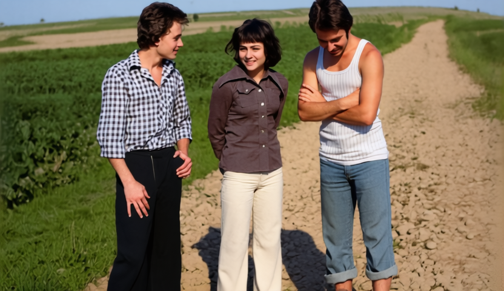

01 / FEATURED PROJECT · GROUP ANIMATION
Moments on the Country Road
Three people, one still photograph, and a new moment in motion. An image-to-video study of natural gestures, shared attention and facial consistency across multiple subjects.
